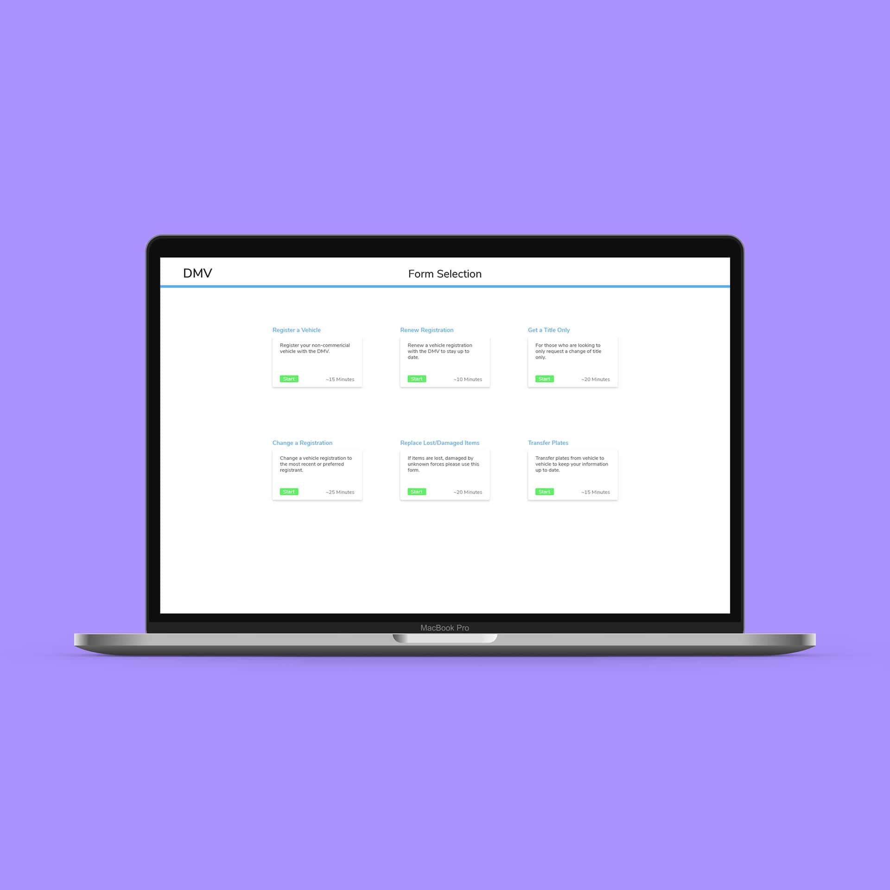

Projects
A cumulation of user experience, visual design, and motion graphics projects.

DMV Form

This project was focused on redesigning the Department of Motor Vehicles form, and the system behind the forms.

The Reporter
This project was about taking Rochester Institute of Technologies "The Reporter" website and create a more user friendly and visually intriguing design.
NMD Channel ID
A motion graphics project where I designed different tv graphics for a fictional New Media Design TV Channel.